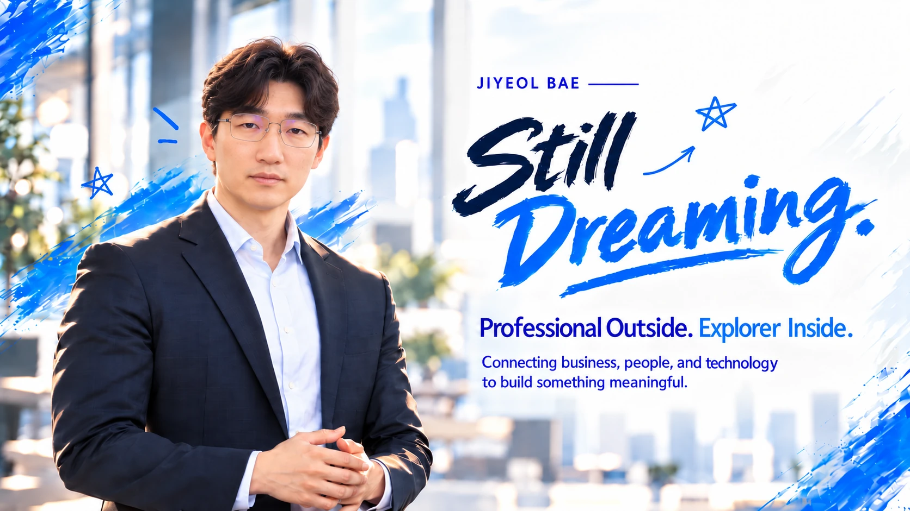
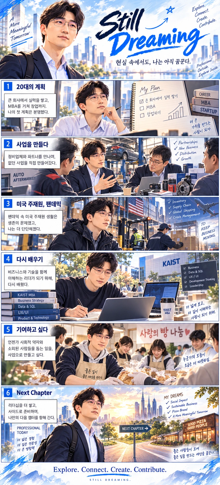

Learning how things work
Mechanical engineering gave me a foundation for structured thinking. Early on, I imagined learning from a large company, earning an MBA, then starting something of my own.

Professional Outside. Explorer Inside.
Connecting business, people, and technology to build something meaningful.
17 years spanning automotive business development, global supply chains and digital systems. I'm still exploring how to turn experience into something that matters.
Explore my storyI started with a plan to build my own business. Life introduced other chapters—and each one changed how I see opportunity.
Mechanical engineering gave me a foundation for structured thinking. Early on, I imagined learning from a large company, earning an MBA, then starting something of my own.
I helped launch two businesses serving automotive repair shops by working with industry associations, manufacturers and distribution partners. The work was recognized with a CEO award.
During my U.S. assignment, the pandemic disrupted production and shipping. Sales, product planning, inventory and logistics became lessons in resilience and execution.
I explored new product ideas and refined business plans. I also learned that a team works best when different personalities have room to contribute.
I now work on distribution and logistics systems, learning about data, SQL, UX/UI and change management while pursuing a KAIST MBA. My goal isn't to become a full-time engineer of software, but a leader who understands technology.
Different jobs. One constant curiosity: how to make complicated systems work better for people.
New business planning, product development, market insight and partner ecosystems.
Sales, inventory, logistics and supply chains—especially when the original plan breaks.
Understanding data, architecture, interfaces and change—not technology for its own sake.
Building meaningful collaboration across organizations, disciplines and personalities.
The story first. The details when you want them: what I worked on, contributed, and learned along the way.
Mechanical engineering · Graduation research and interdisciplinary competitions
Studied how micro-porosity in aluminum alloys relates to material properties; also explored brand, marketing and distribution competitions during university.
Top award for graduation research presentation in 2009 and additional student competition recognition.
Built evidence-based problem-solving habits by structuring technical questions through hypotheses, data and validation.
Hyundai Mobis · Global accessories sales
Helped establish a new business model connecting manufacturers, distribution partners and automotive service networks.
Contributed to launching a partnership-led business initiative and received CEO recognition.
Learned to align different stakeholder incentives around a practical, shared value proposition.
Hyundai Mobis · Global accessories sales
Translated customer and field research into new product ideas and distribution-channel development.
Helped establish a private-label product and channel model that contributed to business growth.
Developed a market-led approach linking front-line insights with product, channel and differentiation strategy.
Hyundai Mobis U.S. organization · Sales / product planning
Supported market-specific product planning and local commercial operations for U.S. customers.
Participated in localized product programs across multiple vehicle models.
Learned to turn local customer requirements into deliverable products while coordinating across global partners.
Hyundai Mobis U.S. organization · Inventory / logistics / SCM
Worked through production disruptions, shipping constraints and supply bottlenecks during the pandemic.
Collaborated with supply partners and local teams to sustain operations under uncertainty.
Developed a systems perspective on operational risk across sales, production, inventory and logistics.
Hyundai Mobis · Service new business strategy
Developed product ideas and roadmaps while improving repeatable project-management processes.
Helped formalize project practices and encouraged ownership within a small cross-functional team.
Learned how structure, operating rhythm and leadership help convert creativity into repeatable execution.
Hyundai Mobis · Process innovation / system development
Working across operational data, processes, SQL, UX/UI, system requirements and change management.
Contributing to a next-generation logistics platform; its 2027 release remains a target, not a completed milestone.
Building the capability to translate business problems into technical requirements and lead across business and IT.
KAIST College of Business · MBA student
Studying strategy, finance, organization design, SCM, analytics and technology-enabled change.
Received a High Honor academic distinction from the graduate business school.
Strengthening analytical decision-making by connecting engineering, professional experience and management concepts.
Hyundai Mobis · Employee volunteer community
Organizing employee participation in bread-making and donation activities.
Working with a renewed organizing team to build a more sustainable volunteer model.
Learned that sustainable contribution depends on relationships and practical operating systems, not good intentions alone.
Descriptions focus on individual roles and learnings. Internal company metrics and confidential project details are intentionally omitted.
A few principles that keep me moving, even when reality looks different from the plan.
Stay curious. Keep learning beyond what is familiar.
Find common ground between business, people and technology.
Turn a promising idea into something tangible and useful.
Make room for others to grow, especially those often overlooked.
Six illustrated chapters, one unfinished dream. Based on real experiences, with some creative storytelling.
The plan took a different road. The dream kept moving.
ORIGINAL STORY · STILL DREAMING
This comic visualizes real experiences with artistic interpretation. It is not a claim of starting two independent venture companies. Some scenes are illustrative.
I don't see my remaining corporate years and future entrepreneurship as competing paths. They are parts of the same preparation.
Keep leading.
Keep learning.
Keep dreaming.
Pursue team leadership, deepen systems thinking and, if the opportunity comes, take on another overseas assignment.
Keep exploring ideas and new business while employed. One day, I hope to create a social-impact brand that supports underserved people.
I currently help organize a bread-donation volunteer club at work. Building a lasting model for giving is a challenge I want to keep pursuing.
Shared values. Different strengths. More laughter. Meaningful things built together—and relationships that last.
Shared Values. Different Strengths. Better Together. Connect on GitHub ↗